Creative Strategist • Designer • Digital Storyteller
I don't just manage content — I study human behavior. What makes people stop scrolling, feel something, and remember a brand. That curiosity drives everything I do in digital marketing and design.
I got into digital marketing the way most good things happen — by doing, not planning. It started with managing social media pages and YouTube channels, coordinating creative teams, and figuring out why some content lands and some just doesn't.
Over time, I stopped thinking about content as posts and started thinking about it as human behavior. What makes someone stop? What makes them trust a brand? What makes them feel seen? I read about neuroscience, psychology, and audience behavior — not as a hobby separate from work, but because it is the work.
Day-to-day, I live in content calendars, analytics dashboards, and strategy docs. I work on content planning, audience engagement, editor coordination, and making sure every piece of content serves a real purpose — not just a deadline.
As a marketer and designer, I'm creative, observant, and emotionally aware. I'm not chasing trends — I'm chasing connection.
I read neuroscience and behavioral psychology because understanding how people process information is the ultimate marketing skill. That's my unfair advantage in every strategy I build.
I've been on both sides — creating content and managing it at scale. I know where briefs frustrate creators, where engagement drops, and when content starts to feel transactional.
Strategy without creativity is a spreadsheet. Creativity without strategy is a mood board. I bring both — from campaign planning to performance tracking to content that actually connects.
Senior Campaign Manager — Govt. of India
"Government. But make it scroll-worthy."
Led the social media strategy and execution for the Pension Awareness campaign under the Government of India. Transformed standard bureaucratic announcements into highly engaging, visual content, resulting in massive organic reach across platforms.
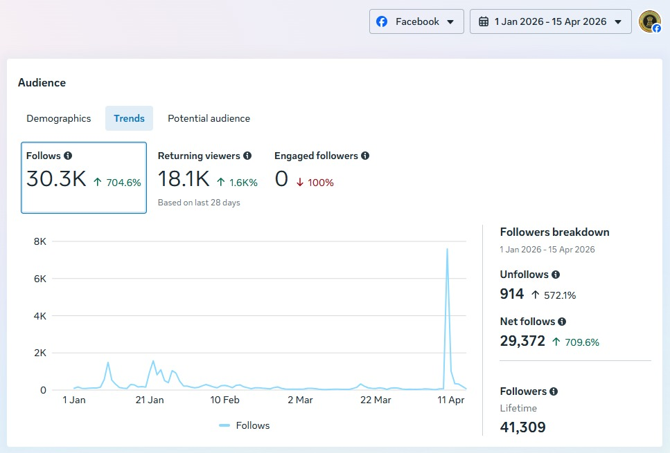
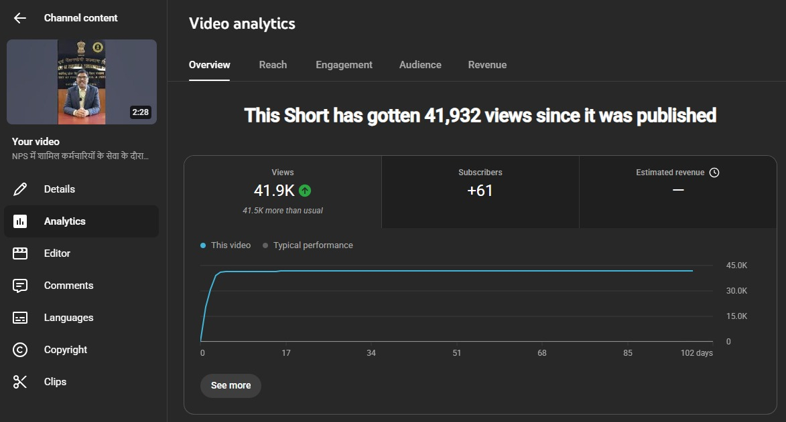
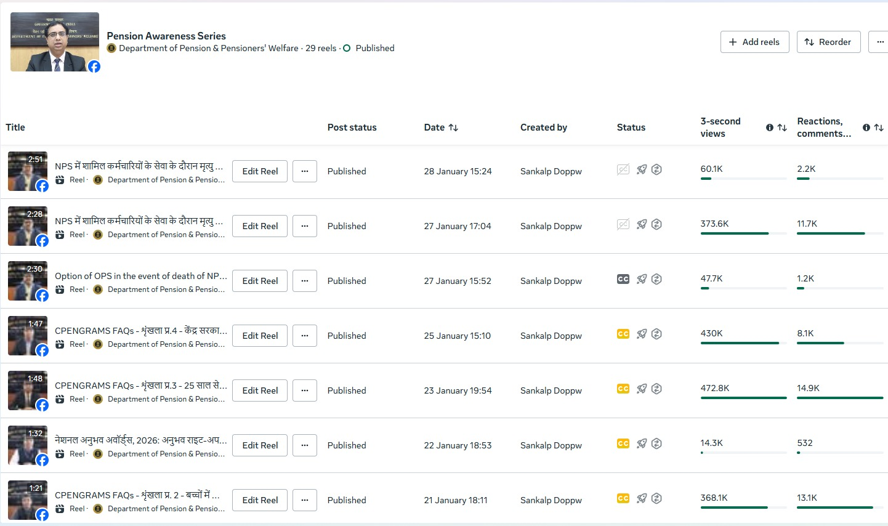
YouTube & Content Strategist — Law Entrance
"SEO-first. Data-driven. Student-first."
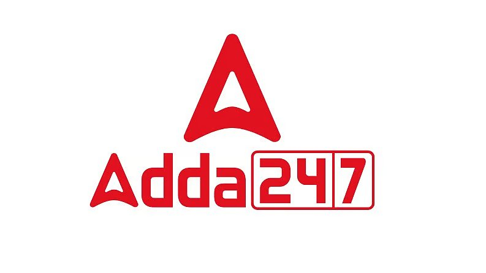
Crafted and executed an evergreen and trend-based content strategy for Adda247's Law Entrance channel. Leveraged YouTube search patterns and designed highly optimized educational scripts to turn one-off educational videos into viral subscriber drivers.
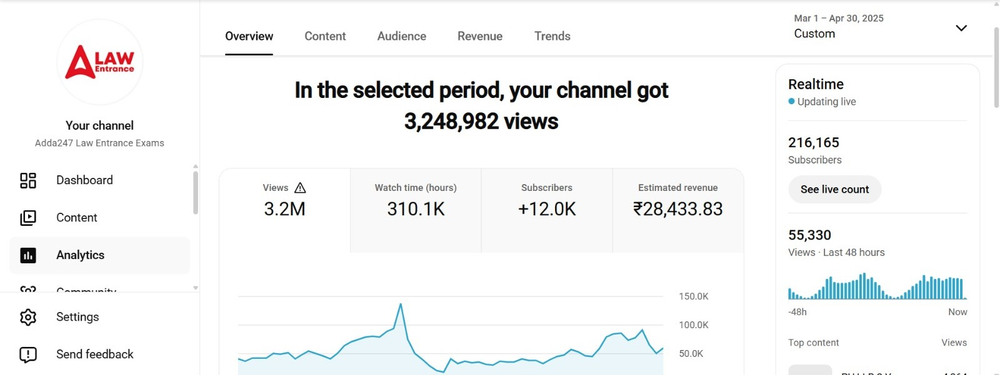
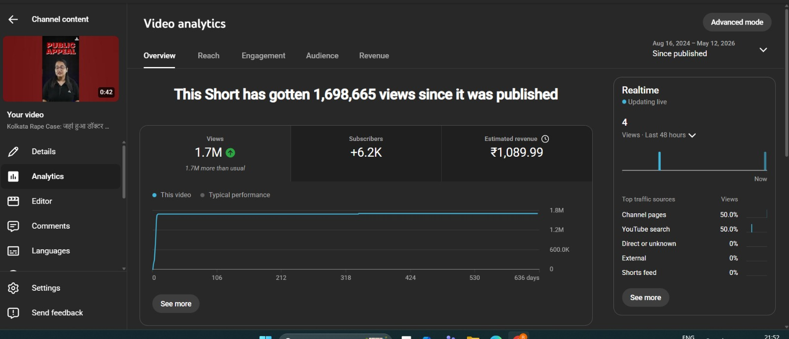
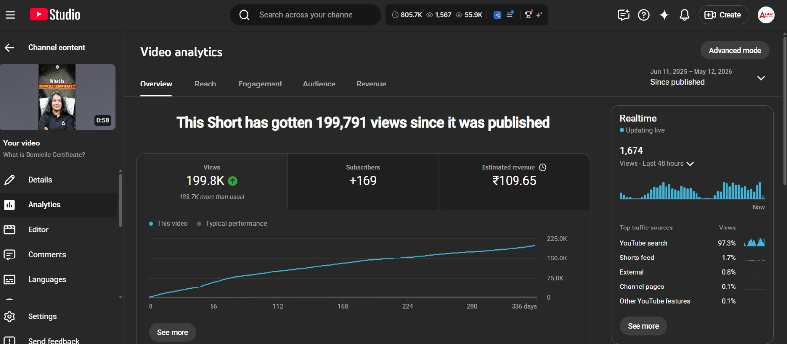
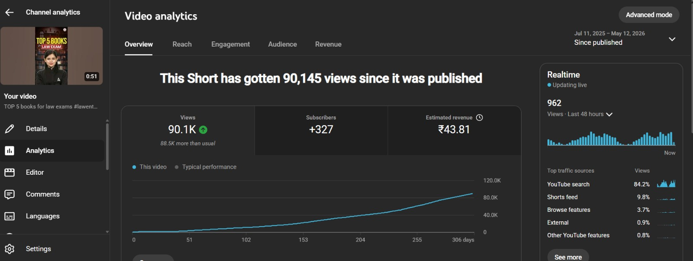
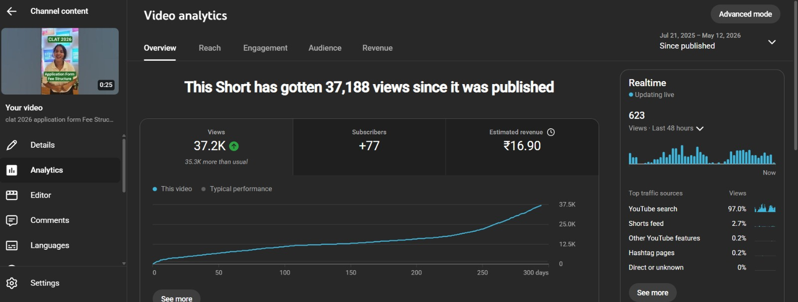
YouTube Growth & Channel Manager
"Content builds channels. Strategy makes them fly."
Re-engineered the content catalog and publishing pipeline for Exam On Education. Fixed CTR and retention gaps through precise title re-framing and custom scripting, resulting in an immediate spike in channel velocity and watch hours.
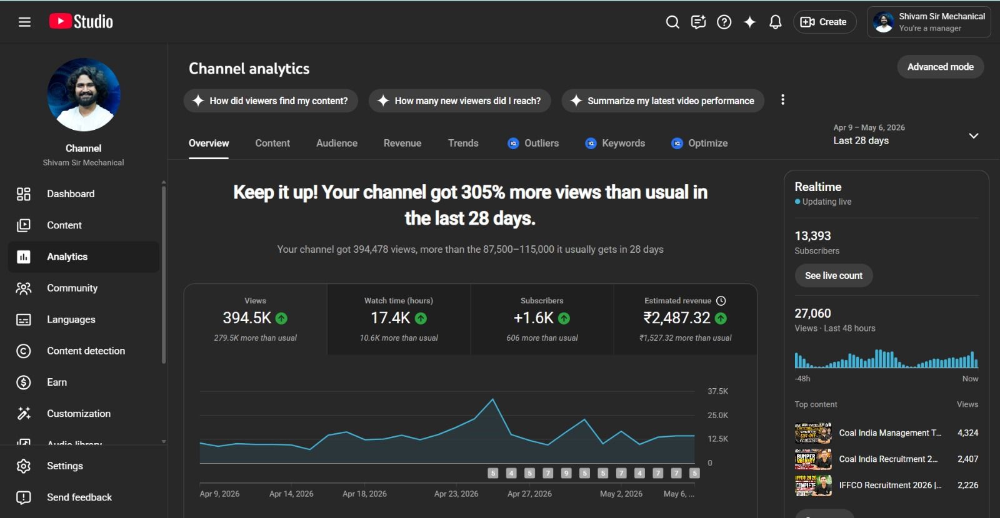
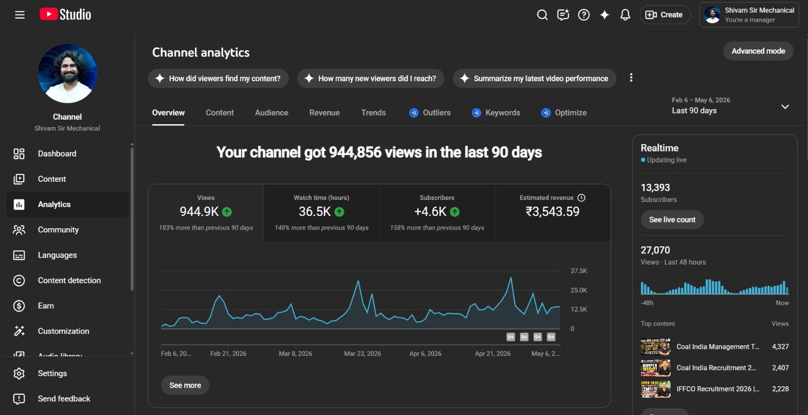
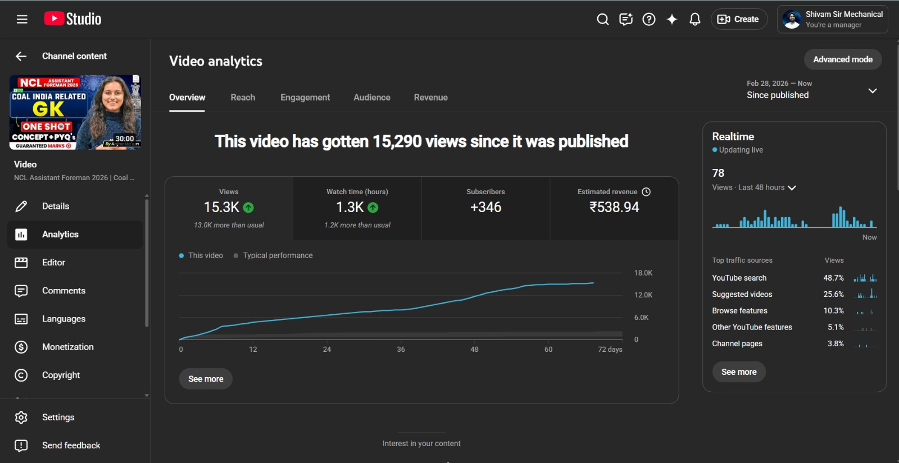
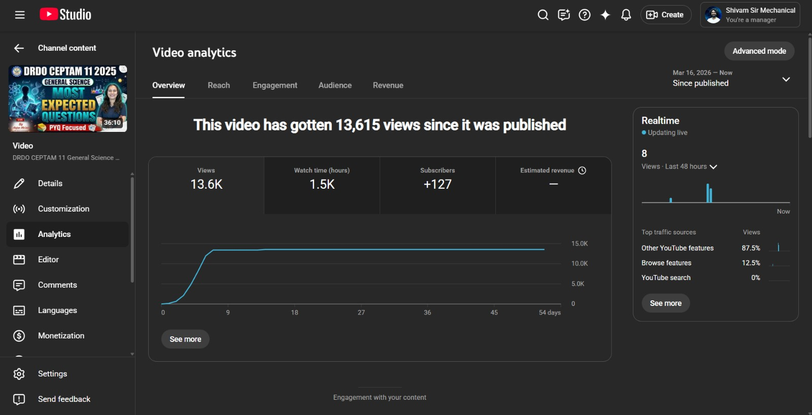
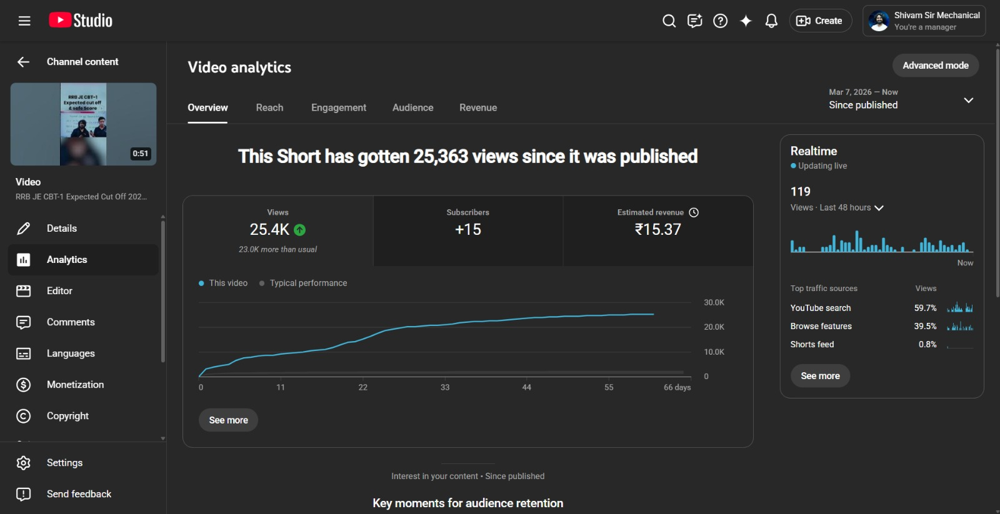
Personal Branding & Tech Community Builder
"Visualizing complexity. Building loops."
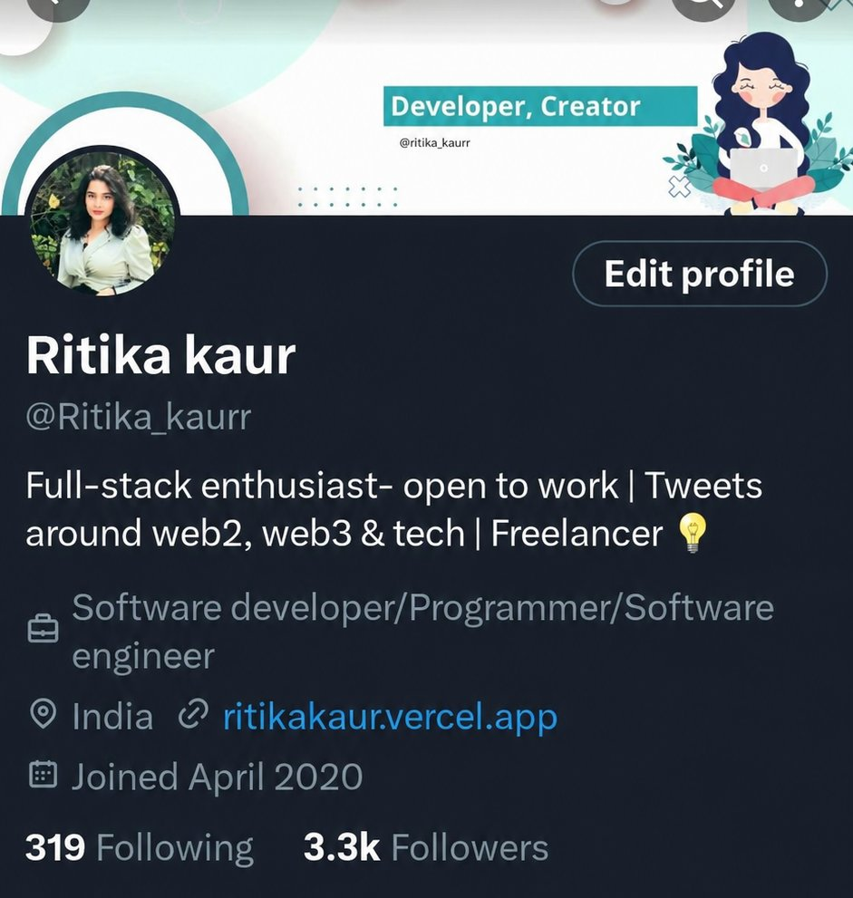
Built a highly engaged niche audience by creating visually rich educational threads on web development, APIs, and computer science concepts. Used structured copywriting to make technical content viral and engaging.
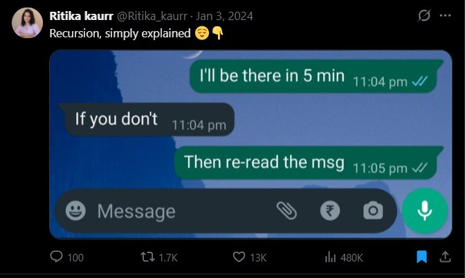
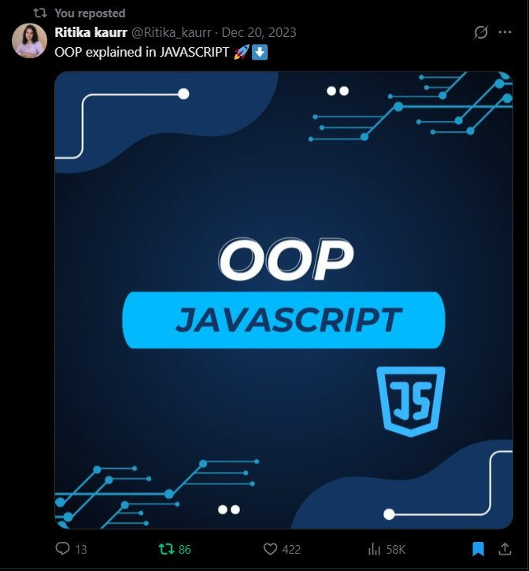
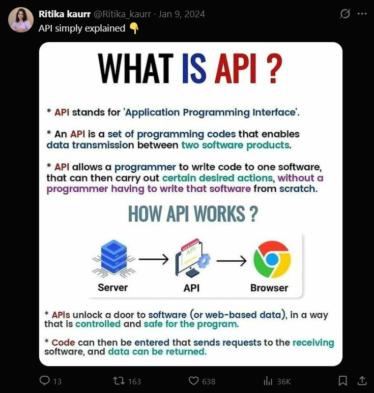
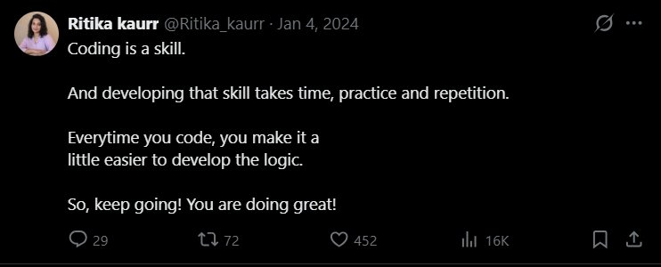
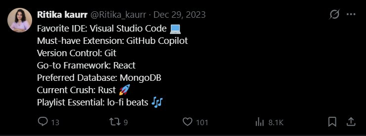
You have exactly 1.5 seconds to hook a viewer. If the first frame, title, or line doesn't tap into a core curiosity or emotion, the strategy is already failing. intros are where campaigns live or die.
Dashboards tell you where the audience was, not where they are going. I look at drop-offs and CTRs to validate ideas, but the hook itself has to feel human, relatable, and slightly unexpected.
Making technical concepts easy to understand doesn't mean making them shallow. It means removing the friction of complex language so that the underlying core concept shines through visually.
Open to consulting, brand collaborations, design contracts, and content growth strategy advisory roles.